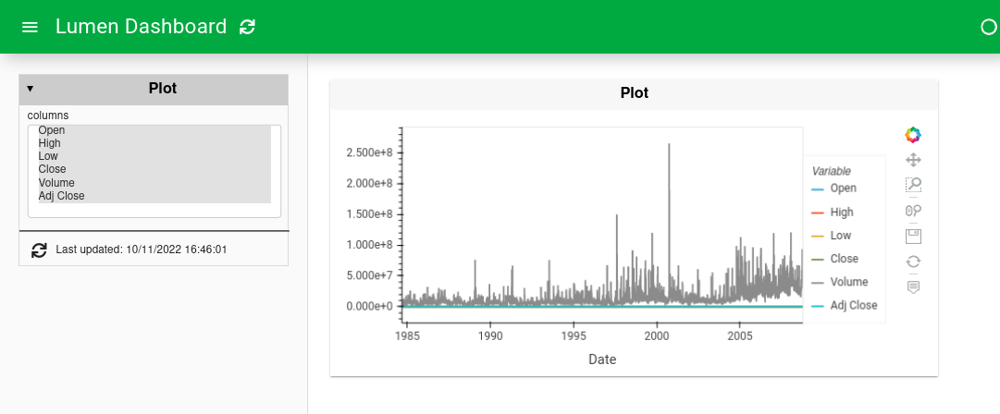
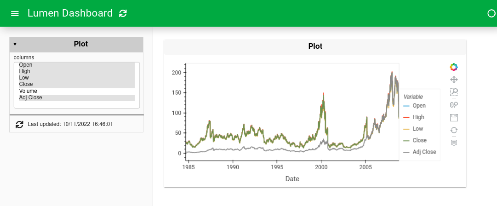
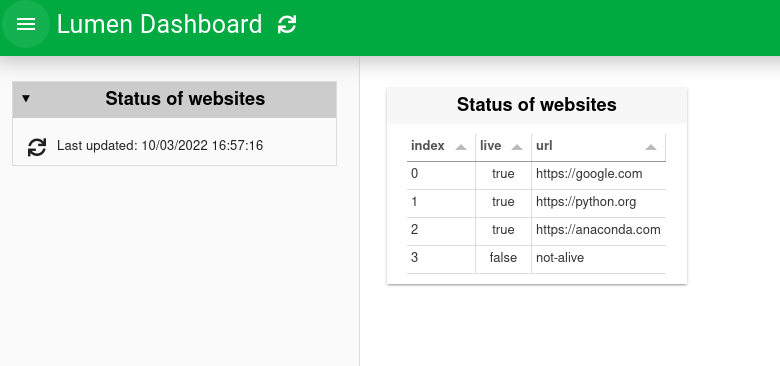
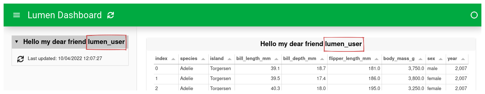

How to use variables#
What does this guide solve?
This guide shows you how to use one of the advanced features of Lumen: Variables.
Overview#
Variables are one of the most powerful features of Lumen. This guide will give you an overview of three different types of variables and how to reference them in the YAML specification.
Variables#
Variables give Lumen components a lot of flexibility. Variables can be defined in multiple ways. The simplest way to define a variable is in the variables block. When a variable is defined, it can be referenced throughout the rest of the specification. This is done by using $variables.NAME, where NAME is the unique name of the variable.
The data source is a remote dataset containing a volume column many magnitudes greater than the rest, making it impossible to see the other time series in the data. Removing Volume from the columns variable makes the other time series visible.
variables:
columns:
type: widget
kind: MultiSelect
value: [Open,High,Low,Close,Volume,Adj Close]
options: [Open,High,Low,Close,Volume,Adj Close]
size: 7
sources:
stock_data:
type: file
tables:
ticker: https://raw.githubusercontent.com/matplotlib/sample_data/master/aapl.csv
kwargs:
index_col: Date
parse_dates: [Date]
pipelines:
ticker_pipe:
source: stock_data
table: ticker
transforms:
- type: columns
columns: $variables.columns
layouts:
- title: Plot
pipeline: ticker_pipe
views:
- type: hvplot
table: ticker


Sources as variables#
Source components can also be used like a variable. There are three main ways to pass Source information by reference:
Passing the source itself by reference
$<source_name>Passing a table on the source by reference
$<source_name>.<table_name>Passing the unique values in a field by reference
$<source_name>.<table_name>.<field_name>
Let us explore an example passing field values by reference. In the example below we define two sources:
The first is a CSV file with a single column containing different website URLs.
The second is a live source that checks whether the URLs from the first source are alive or dead.
sources:
csv:
type: file
files: [websites.csv]
live:
type: live
urls: $csv.websites.url
layouts:
- title: Status of websites
source: live
views:
- type: table

url
https://google.com
https://python.org
https://anaconda.com
not-alive
The reference to the variable is built up as:
The name of the source to reference,
csvin this case.The table’s name
websites, which is the filename without an extension.Which column of the table to look at
url.Combine the last three parts, and you get the following variable
$csv.websites.url.
External variables (templating)#
The last way to reference variables is by using external variables. There are six ways to do this, all of which use Jinja2 templating with the double curly brackets notation.
Method |
How |
|---|---|
Environment variable |
|
Request cookies |
|
Request header |
|
OAuth user token |
|
Furthermore, CLI arguments or shell commands can be used. See the sections below.
Variables with the command line#
To pass CLI arguments --template-vars should be used with lumen serve.
sources:
source:
type: file
tables:
table: https://datasets.holoviz.org/penguins/v1/penguins.csv
layouts:
- title: Hello my dear friend {{ USER }}
source: source
views:
- type: table
table: table
Ran with lumen serve cli_example.yml --template-vars="{'USER': 'lumen_user'}"

Ran with lumen serve cli_example.yml

Variables with a shell command#
The shell command is done by {{ shell(COMMAND) }} and then uses the output of the command.
It is worth noting that the output will be trimmed of any trailing whitespace.
As a simple example, echo can be used as the shell command.
sources:
source:
type: file
tables:
table: https://datasets.holoviz.org/penguins/v1/penguins.csv
layouts:
- title: {{ shell("echo hello from the shell") }}
source: source
views:
- type: table
table: table

Should I use $ or {{ }} for reference?
Internal variables are referenced with a starting dollar sign $, whereas external references use double curly brackets before and after {{ }}. External references are only resolved when the dashboard is initialized while internal variables can be resolved dynamically.